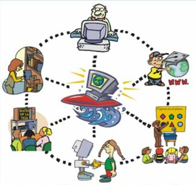
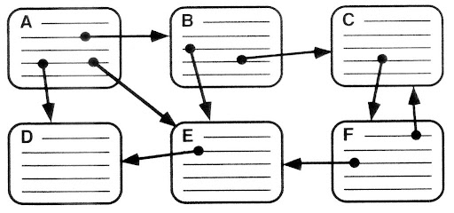

<!doctype html>
<html lang="en">
  <head>

    <body background="imagenes/134465457.jpg" ></body>
    <meta charset="utf-8">
    <meta name="viewport" content="width=device-width, initial-scale=1">

    <!-- Bootstrap CSS -->
    <link href="https://cdn.jsdelivr.net/npm/bootstrap@5.1.1/dist/css/bootstrap.min.css" rel="stylesheet" integrity="sha384-F3w7mX95PdgyTmZZMECAngseQB83DfGTowi0iMjiWaeVhAn4FJkqJByhZMI3AhiU" crossorigin="anonymous">
    <link rel="stylesheet" href="css/styles.css">
    <title>proyecto2</title>
  </head>
  <body>

    <!--INICIA Cabezera-->
    <nav class="navbar navbar-expand-md navbar-light bg-light">
        <a href="index.html" class="navbar-brand"><h1> El hipertexto</h1></a>
        <button class="navbar-toggler" type="button" data-toggle="collapse" data-target="#navbar7">
            <span class="navbar-toggler-icon"></span>
        </button>
          
        <div class="navbar-collapse collapse justify-content-stretch" id="navbar7">
            <ul class="navbar-nav mr-auto">
              <li class="nav-item">
                <a class="nav-link" href="index.html">Inicio</a>
              </li>
              <li class="nav-item dropdown">
                <a class="nav-link dropdown-toggle" href="#" id="navbarDropdown" role="button" data-bs-toggle="dropdown" aria-expanded="false">
                 Contenido
                </a>
                <ul class="dropdown-menu" aria-labelledby="navbarDropdown">
                  <li><a class="dropdown-item" href="tipos-y-elementos-hipert.html">Tipos y Elementos del hipertexto</a></li>
                  <li><a class="dropdown-item" href="ventajas-desventjs.html">Ventajas y desventajas</a></li>
                  <li><a class="dropdown-item" href="usos-y-eficacia.html">Usos y Eficacia del hipertexto</a></li>
                </ul>
                <li class="nav-item">
                    <a class="nav-link">Contacto</a>
                </li>
              </li>
                <li>
                    <a title=facebook href="http://www.facebook.com"></a>
                    <a title=twitter href="http://www.twitter.com"></a>
                    <a title=github href="https://github.com/OscarMeridaA190442"></a>
                </li>
            </ul>
    </nav>
    <!--TERMINA Cabezera-->
    <main>
        <div class="usosyeficacia">
            <div id="datos">
              <p><font size="15" face="Arial Narrow"><center>Usos y eficacia del Hipertexto.</center></font></p>
            </div>
        </div>
        <br>
        <div class="usos001">
            <div id="datos">
              <font size="10" face="Ginebra"><center>Usos del Hipertexto.</center></font>
                <b> <td><UL>
                  <h3>Es importante saber que no puede ser apropiado para todos los usos, y ofrece 3 
                    reglas fundamentales que pueden determinar cuándo es conveniente usarlo.</h3>
                    <br>
                  <h5><LI>Cuando existe un gran cuerpo de información organizado en muchos fragmentos.</LI></h5>
                  <h5><LI>Cuando estos fragmentos se relacionan unos con otros.</LI></h5>
                  <h5><LI>Cuándo en cualquier momento, los lectores necesitan solamente una pequeña 
                    fracción de esta información.</LI></h5>
                    <br>
                    <h3>Estas son algunas aplicaciones ideales del hipertexto:</h3>
                    <br>
                      <h4>- Material de referencia general o especializado: Por ejemplo, las instrucciones 
                      de las computadoras funcionan muy bien en línea. Los usuarios de estos no quieren 
                      leerse todo un manual, necesitan la información contenida en partes relevantes 
                      o en las secciones que vayan necesitando. Lo normal es que acudan a documentos 
                      en línea para obtener respuestas rápidas a sus preguntas.</h4>
                      <br>
                      <h4>- Cualquier material que pueda dividirse en segmentos(contenidos) cortos y 
                        autónomos: Los usuarios acuden a la web con el propósito de buscar información especifica.
                         Al fraccionar el material en contenidos mas pequeños y etiquetarlos con títulos y 
                         subtítulos precisos.</h4>
                </td></UL>
                    <center></center>
              </div>
        </div>
            <br>
          <div class="eficacia001">
            <div id="datos">
              <font size="6" face="Ginebra"><center>Eficacia del hipertexto.</center></font>
                <b> <td><UL>
                  <br>
                  <h3><LI>Hay 3 parámetros de usabilidad del hipertexto que se deben considerar.</LI></h3>
                  <h3></LI>  Un hipertexto es:</LI></h3>
                <h4><p>Fácil de aprender. </p></h4>
                <h5>- Un hipertexto se comprende fácilmente, los usuarios 
                  captan con rapidez cómo se navega y cuales son los comandos para 
                  localizar la información.</h5> 
                  <br>
                <h4><p>Fácil de recordar. </p></h4>
                <h5>- Si un hipertexto se recuerda con facilidad, los usuarios pueden regresar 
                  al tiempo y todavía recordad su estructura general. Esto es, encontrar la ruta que 
                  recorrieron por la red, reconocerán además contenidos marcados y convenciones 
                  especiales usadas para estos, así como sus enlaces.</h5>
                  <br>
                <h4><p>Prácticamente libre de errores. </p></h4>
                <h5>- cuando los lectores encuentran pocos errores con hipertexto, 
                  pocas veces siguen el enlace, pueden regresar fácilmente a su localización anterior, 
                  así como también volver fácilmente a cualquier lugar anterior si piensan que se han 
                  alejado mucho del objetivo..</h5>  
                </td></UL>
                    <center></center>
              </div>
        </div>
    </main>


    <!-- Optional JavaScript; choose one of the two! -->
    <!-- Option 1: Bootstrap Bundle with Popper -->
    <script src="https://cdn.jsdelivr.net/npm/bootstrap@5.1.1/dist/js/bootstrap.bundle.min.js" integrity="sha384-/bQdsTh/da6pkI1MST/rWKFNjaCP5gBSY4sEBT38Q/9RBh9AH40zEOg7Hlq2THRZ" crossorigin="anonymous"></script>

    <!-- Option 2: Separate Popper and Bootstrap JS -->
    <!--
    <script src="https://cdn.jsdelivr.net/npm/@popperjs/core@2.9.3/dist/umd/popper.min.js" integrity="sha384-W8fXfP3gkOKtndU4JGtKDvXbO53Wy8SZCQHczT5FMiiqmQfUpWbYdTil/SxwZgAN" crossorigin="anonymous"></script>
    <script src="https://cdn.jsdelivr.net/npm/bootstrap@5.1.1/dist/js/bootstrap.min.js" integrity="sha384-skAcpIdS7UcVUC05LJ9Dxay8AXcDYfBJqt1CJ85S/CFujBsIzCIv+l9liuYLaMQ/" crossorigin="anonymous"></script>
    -->
  </body>
</html>